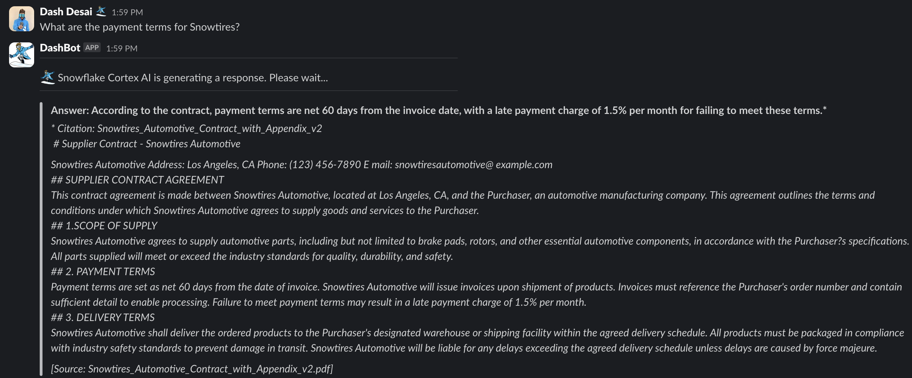

Cortex Agents simplify AI-powered data interactions via a REST API, combining hybrid search and accurate SQL generation. They streamline workflows by managing context retrieval, natural language to SQL conversion, and LLM orchestration. Response quality is enhanced with in-line citations, answer abstention, and multi-message context handling. Developers benefit from a single API call integration, real-time streamed responses, and reduced latency for optimized applications.
In this guide, we will see how to integrate the Cortex Agents (in Public Preview as of 01/12/2025) with Slack.
Why Cortex Agents?
Business users have typically relied on BI dashboards and reports for data insights, but these tools often lack flexibility, requiring users to wait on busy data analysts for updates. Cortex Agents addresses this with a natural language interface allowing organizations to develop conversational applications. This enables business users to query data in natural language and get accurate answers in near real time.
Learn more about Cortex Agents.
Why Slack?
Slack is a communication and collaboration platform designed to streamline workplace interactions. It allows teams to organize conversations by channels, send direct messages, share files, and integrate with other tools for a seamless workflow. Slack also supports the deployment of bots and apps, making it a hub for productivity, quick information sharing, and team alignment across projects.
Prerequisites
- A Snowflake account in one of these regions and also where PARSE_DOCUMENT is available. If you do not have one you can register for a free trial account.
- A Slack account with access to a workspace where you can install applications. NOTE : Slack recommends using a workspace where you won't disrupt real work getting done — you can create a new one for free .
- Python version >= 3.8, < 3.13
What You Will Learn
- How to setup Slack application
- How to setup Cortex Analyst
- How to setup Cortext Search
- How to use Cortex Agents REST API and integrate it with Slack
What You Will Build
Cortex Agents integrated with Slack
Follow instructions in this step-by-step guide to create and set up your barebones Slack application in Python.
NOTE: You may skip the section titled "Sending and responding to actions" because we won't be using that in our application.
Before proceeding, please make sure you have the boilerplate Slack application running as shown in the above guide.
@app.message("hello")
def message_hello(message, say):
# say() sends a message to the channel where the event was triggered
say(f"Hey there <@{message['user']}>!")
# Start your app
if __name__ == "__main__":
SocketModeHandler(app, os.environ["SLACK_APP_TOKEN"]).start()
Step 1: Clone the GitHub repo.
Step 2: In Snowsight, create a SQL Worksheet and open setup.sql to execute all statements in order from top to bottom. This is to to create a database, schema, and table SUPPORT_TICKETS with data loaded from AWS S3. And also to create Snowflake managed internal stages for store the semantic model specification file and PDF documents.
Step 3: Use Snowsight to upload the semantic model spec file to the DASH_SEMANTIC_MODELS stage.
Step 4: Use Snowsight to upload PDF documents to the DASH_PDFS stage.
Step 5: In Snowsight, create a SQL Worksheet and open cortex_search_service.sql to execute all statements in order from top to bottom. This is to create a Cortex Search service for getting insights from the PDF documents. NOTE: PARSE_DOCUMENT is in Public Preview as of 01/12/2025.
Step 6: Configure key-pair authentication and assign the public key to your user in Snowflake and store/save/copy the private key file (.p8) in your cloned app folder.
Step 1: Change or browse to the cloned repo folder sfguide-integrate-snowflake-cortex-agents-with-slack on your local machine and open the contents of the folder in your favorite IDE — like VS Code.
Step 2: In the same folder, create a new file .env and set the following environment variables:
DEMO_DATABASE='DASH_DB'
DEMO_SCHEMA='DASH_SCHEMA'
WAREHOUSE='DASH_S'
DEMO_USER='<your-user-name>'
DEMO_USER_ROLE='<your-user-role>'
SEMANTIC_MODEL='@DASH_DB.DASH_SCHEMA.DASH_SEMANTIC_MODELS/support_tickets_semantic_model.yaml'
SEARCH_SERVICE='DASH_DB.DASH_SCHEMA.vehicles_info'
ACCOUNT='<your-account-identifier>'
HOST='<your-account-identifier>.snowflakecomputing.com'
AGENT_ENDPOINT='https://<your-org>-<your-account>.snowflakecomputing.com/api/v2/cortex/agent:run'
SLACK_APP_TOKEN='<your-slack-app-token>'
SLACK_BOT_TOKEN='<your-slack-bot-token>'
# You may NOT edit below values
RSA_PRIVATE_KEY_PATH='rsa_key.p8'
MODEL = 'claude-4-sonnet'
Step 3: In a terminal window, browse to the same cloned folder sfguide-integrate-snowflake-cortex-agents-with-slack and run the following commands to create Python environment and install the Python packages and dependencies required for the application.
python3 -m venv .venv
source .venv/bin/activate
pip install -r requirements.txt
Step 4: Browse to your Slack App » navigate to OAuth & Permissions on the left » scroll down to Scopes, and then add files:write by clicking on Add an OAuth Scope button. This is required by the app to generate, save, and display chart image files.
Before proceeding, make sure you test that the Cortex Agents API endpoint and other env variables in .env have been set correctly.
Browse to the cloned folder in VS Code and run python test.py in a terminal window.
If you see the output as shown below, then you're good to go.
✅ Cortex Agents response:
event: message.delta
data: {"id":"msg_001","object":"message.delta","delta":{"content":[{"index":0,"type":"tool_use","tool_use":{"tool_use_id":"tooluse_257e026c935a46848d09b4","name":"supply_chain","input":{"query":"Can you show me a breakdown of customer support tickets by service type cellular vs business internet?","model":"snowflake-hosted-semantic","experimental":""}}},{"index":0,"type":"tool_results","tool_results":{"tool_use_id":"tooluse_257e026c935a46848d09b4","content":[{"type":"json","json":{"sql":"WITH __support_tickets AS (\n SELECT\n ticket_id,\n service_type\n FROM dash_db_swt_2024.data.support_tickets\n)\nSELECT\n service_type,\n COUNT(DISTINCT ticket_id) AS ticket_count\nFROM __support_tickets\nWHERE\n service_type IN (\u0027Cellular\u0027, \u0027Business Internet\u0027)\nGROUP BY\n service_type\n -- Generated by Cortex Analyst\n;","verified_query_used":false,"text":"This is our interpretation of your question:\n\nShow me the count of support tickets broken down by service type, specifically for Cellular and Business Internet services"}}],"status":"success","name":"supply_chain","type":"cortex_analyst_text_to_sql"}}]}}
event: done
data: [DONE]
If you see any errors, please double check all values set in .env. Common errors are related to ACCOUNT, HOST, AGENT_ENDPOINT and how the RSA key-pair is generated.
If you get this error Caused by SSLError(SSLCertVerificationError(1, "[SSL: CERTIFICATE_VERIFY_FAILED] certificate verify failed: Hostname mismatch, certificate is not valid..., then try adding locator.region to your-account-identifier. For additional instructions and help, refer to the documentation.
Browse to the cloned repo folder sfguide-integrate-snowflake-cortex-agents-with-slack in a terminal window where you executed the commands in the previous section and start the application by running the following command.
./slack_bot
If all goes well, you should see the following output on the command line.
⚡️ Bolt app is running!
Assuming your app is running without any errors, head over to your Slack channel/app you set up in the Setup Slack section and ask the following questions.
Cortex Analyst: Structured Data
Question: Can you show me a breakdown of customer support tickets by service type cellular vs business internet?
In a few moments, you should see the following response:

Now let's ask this question.
Question: How many unique customers have raised a support ticket with a ‘Cellular' service type and have ‘Email' as their contact preference?
In a few moments, you should see the following response:

Cortex Search: Unstructured Data
Question: What are the payment terms for Snowtires?
In a few moments, you should see the following response:

Now let's ask this question.
Question: What's the latest, most effective way to recycle rubber tires?
In a few moments, you should see the following response:

As you can see, now (business) users can directly get answers to their questions written in natural language using the Slack app.
Code Walkthrough
As you may have noticed, the main application code is in app.py and the Cortex agent REST API code is in cortex_chat.py.
Here are some things you should make a note of in case you'd like to extend or modify the application.
init()
In this method, a secure connection to Snowflake is established and an instance of CortexChat is created. This CortexChat instance is initialized with AGENT_ENDPOINT, SEARCH_SERVICE, SEMANTIC_MODEL, MODEL, and a Java Web Token (JWT).
handle_message_events()
This method is decorated with @app.event("message") and is invoked when you type a question in Slack. After displaying the initial message, it calls ask_agent() passing it the question in variable prompt. Then it calls display_agent_response() passing it the response from
ask_agent()
This method is called from handle_message_events. It use the instance of CortexChat to call chat() method. This methods internally calls _retrieve_response(), _parse_response() and other methods to retrieve and parse the Cortex Agent response.
display_agent_response()
This method is called from handle_message_events. It takes the response from ask_agent() and sends the formatted output to Slack.
NOTE: The response from Cortex Agents REST API includes the SQL query that is generated based on the natural language prompt/question passed in as input. This SQL query is executed in the application (line 125 in app.py) to display the results in Slack.
plot_chart()
This method takes a Pandas DataFrame as an input and dynamically generates a pie chart.
NOTE: While the code to generate the chart is very specific to the data used in this example, the flow/logic is broadly applicable.
- A chart is generated based on the data
- The chart image is saved locally — line 237 in app.py
- The image file is securely uploaded to Slack using Slack APIs getUploadURLExternal and completeUploadExternal
- The permalink provided by Slack is used to access / display the image — line 176 in app.py
Congratulations! You've sucessfully integrated Cortex Agents with Slack. I hope you found this guide both educational and inspiring.
What You Learned
- How to setup Slack application
- How to setup Cortex Analyst
- How to setup Cortext Search
- How to use Cortex Agents REST API and integrate it with Slack